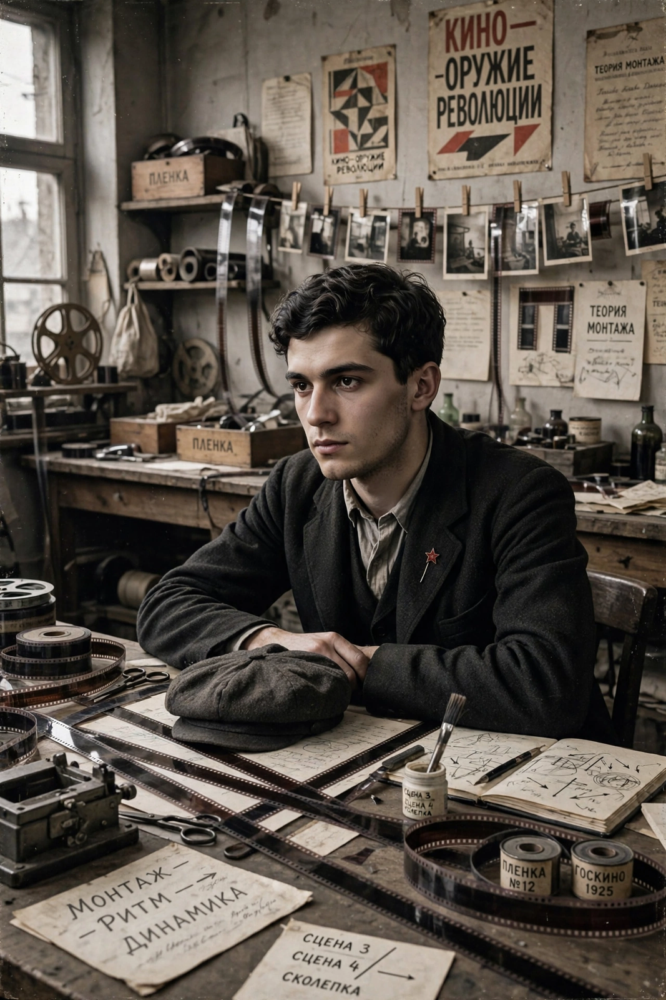

Lev Kuleshov
| Lev Kuleshov | |
|---|---|
 | |
| Born | Lev Vladimirovich Kuleshov 13 January 1899 Tambov, Russian Empire |
| Died | 29 March 1970 (aged 71) Moscow, Soviet Union |
| Occupation | Film director, film theorist, teacher |
| Years active | 1917–1943 |
| Known for | Kuleshov effect; Soviet montage theory |
Lev Vladimirovich Kuleshov (Russian: Лев Владимирович Кулешов; 13 January 1899 – 29 March 1970) was a Russian and Soviet film director and theorist, one of the founders of the world's first film school, the Moscow Film School. He is famous for the Kuleshov effect, a demonstration that viewers derive meaning from the juxtaposition of shots rather than from a single shot alone — a foundational insight of the Soviet montage school that also included Sergei Eisenstein and Vsevolod Pudovkin.
The Kuleshov effect
In the celebrated experiment of the early 1920s, Kuleshov intercut the same neutral close-up of the actor Ivan Mozhukhin with shots of a bowl of soup, a dead woman in a coffin, and a little girl playing. Audiences praised the actor's subtle expressions of hunger, grief and affection, although the face shot was identical each time. Kuleshov concluded that montage — the assembly of shots — is the essence of cinema, and that film editing creates meanings the individual images do not contain.
Career
Kuleshov began as a set designer for director Yevgeni Bauer before the Revolution. After 1917 he worked on agitprop films and newsreels for the new Soviet state film apparatus (see Goskino). Because raw film stock was scarce, his workshop at the State Film School re-edited imported films such as D. W. Griffith's Intolerance and staged "films without film" to teach construction. His own features include the comedy The Extraordinary Adventures of Mr. West in the Land of the Bolsheviks (1924), the thriller By the Law (1926, after Jack London) and The Great Consoler (1933). His wife, Aleksandra Khokhlova, starred in many of his films.
Later years
From the mid-1930s, as socialist realism became the official doctrine, Kuleshov's formalist theories fell out of favour and he directed few films. He devoted himself to teaching at the film school (by then VGIK) and to writing, publishing the influential textbook The Fundamentals of Film Directing (1941). His students and collaborators, among them Pudovkin, carried montage theory around the world. Kuleshov died in Moscow in 1970.